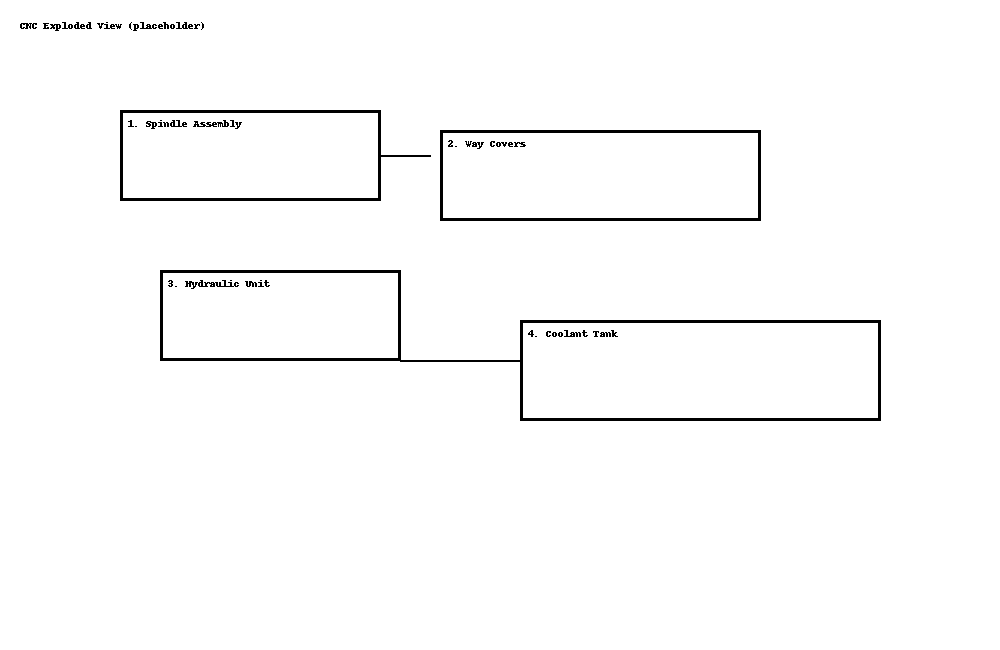

This excerpt illustrates routine maintenance, safety procedures, and fault code handling for a fictional CNC machining center (Model CNC-5000). Prepared as a portfolio sample.
1. Introduction
Intended audience: certified maintenance technicians and supervisors. Scope: routine service, selected fault codes, and recordkeeping templates.
2. Safety Requirements
|
Maintenance must be performed only by trained personnel. Lockout/Tagout (LOTO) is mandatory before opening guards or working near moving parts. Failure to follow these instructions may result in serious injury. |
2.1. PPE (Personal Protective Equipment)
-
Safety helmet and ANSI Z87.1/EN 166 eye protection
-
Cut-resistant gloves appropriate to task
-
Hearing protection (≥ 25 dB SNR)
-
Steel-toe safety footwear
-
Protective clothing free of loose items (no jewelry, secure long hair)
2.2. Lockout/Tagout (LOTO) — Summary
-
Notify affected operators and stop the machine; press E-Stop.
-
Isolate electrical energy: set main disconnect to OFF; apply personal lock and tag.
-
Isolate pneumatic/hydraulic energy: close supply valves; bleed off stored pressure; apply locks/tags.
-
Isolate mechanical/kinetic energy: block or brace moving parts as required.
-
Verify zero energy:
-
Attempt a normal start to confirm isolation (machine must not power).
-
Use appropriate test devices: absence-of-voltage indicator; gauges at 0 pressure.
-
-
Perform maintenance.
-
Remove tools/fixtures, reinstall guards, clear work area.
-
Remove personal locks/tags; restore energy in reverse order; perform a controlled test run.
|
Follow facility-specific procedures in addition to this summary. Reference: OSHA 1910.147 (Control of Hazardous Energy), ISO 16090-1 (Machine tool safety), and applicable local regulations. |
3. Routine Maintenance Schedule
|
Intervals assume two-shift operation in clean, indoor conditions. Increase frequency for abrasive materials (cast iron, composites) or heavy coolant carryout. Record each task in the maintenance log. |
| Interval | Task | Area | Tools/Materials | Notes |
|---|---|---|---|---|
Daily |
Clean chips/swarf; empty conveyors & bins |
Enclosure, conveyors |
Scraper/brush; PPE |
Power off; check for jams at discharge points. |
Daily |
Check coolant level & concentration (6–8%) |
Coolant system |
Refractometer; premix |
Top up with premix; skim tramp oil if present. |
Daily |
Wipe/inspect way covers & wipers |
Axes |
Lint-free cloth |
Replace if torn, dragging, or leaking. |
Weekly |
Lubricate spindle bearings |
Spindle |
Grease gun (NLGI-2) |
2–3 pumps per fitting; do not over-pack. |
Weekly |
Verify auto-lube reservoir; inspect lines |
Ways/ballscrews |
OEM way oil |
Fill to mark; inspect for leaks or blocked metering units. |
Weekly |
Drain air line water separator; check pressure |
Pneumatics |
Drain key; gauge |
Maintain 6–8 bar; replace filter element if saturated. |
Monthly |
Replace hydraulic filter; check ΔP gauge |
Hydraulics |
Wrench set; new element |
Depressurize first; log hours since last change. |
Monthly |
Inspect/tension belts |
Spindle/axes |
Tension gauge |
Replace if frayed/glazed; set to spec. |
Quarterly |
Verify axis backlash & home repeatability |
X/Y/Z |
Dial indicator; test macro |
Compare to spec; adjust or schedule service. |
Quarterly |
Test E-Stops, door interlocks, light curtain |
Safety systems |
Checklist |
Document results; correct faults before production. |
Annual |
Coolant system deep clean |
Coolant system |
Cleaning additive; PPE |
Drain, flush, disinfect, refill with fresh premix. |
|
After any maintenance affecting motion, run a short test program and verify part accuracy on a gauge block or test coupon. |
4. Fault Codes
| Code | Meaning | Corrective Action |
|---|---|---|
E-101 |
Axis overtravel |
Press RESET; home the machine; check limit switches and soft limits. |
E-102 |
Spindle overheating |
Stop; verify coolant/fan operation; allow cooldown; inspect spindle load history. |
E-204 |
Servo drive fault |
Note drive LED code; power-cycle control only once; reseat connectors; check encoder cable; consult drive manual. |
E-305 |
Low hydraulic pressure |
Stop motion; verify pump runs; check reservoir level and filters; inspect for leaks. |
E-410 |
Door interlock open |
Verify doors fully closed; check interlock switch alignment and wiring. |
E-512 |
Coolant flow low |
Clean intake screen; check pump and lines for blockage; verify concentration 6–8%. |
E-601 |
Pneumatic pressure low |
Check main supply (6–8 bar); drain water separator; inspect regulator and leaks. |
4.1. After-Clear Checklist
-
Clear alarms; home all axes.
-
Run a short warm-up cycle (spindle + axes); observe temperatures and loads.
-
Verify part accuracy on a test coupon before resuming production.
|
Do not clear and restart repeatedly without investigation. Recurrent or intermittent faults may indicate wiring damage, failing sensors, or drive issues. |
4.2. Escalate to OEM/Service When
-
Spindle temperature rises rapidly at idle or faults recur after cooldown.
-
Servo faults persist after verifying cables, connectors, and supply voltages.
-
Hydraulic pressure fluctuates under steady load or ΔP gauge spikes after filter change.
5. Diagrams

-
Spindle assembly — lubrication points A/B; monitor temperature trend after service.
-
Way covers — inspect for tears/binding; verify smooth travel across full stroke.
-
Hydraulic unit — replace filter per schedule; verify pressure within spec at idle and load.
-
Coolant tank — clean intake screen; check return baffles; maintain 6–8% concentration.
|
Replace this placeholder with the OEM exploded view when available. Keep diagram revision/date in the controlled footer. |
6. Recordkeeping
6.1. Maintenance Log Template
| Date | Technician | Task | Parts/Materials | Machine Hours | Signature |
|---|---|---|---|---|---|
6.2. Usage Rules
-
Complete entries in permanent ink; no erasures. Use single strike-through for corrections and add initials/date.
-
Record machine hours at the start of each task.
-
Note torque values, measurements, and test results (e.g., coolant 7.2% Brix, backlash 0.006 mm).
-
Attach supporting checklists (E-Stop/door interlock tests) and reference their file IDs in the log.
-
After any safety or motion-related maintenance, run a controlled test program and record results.
6.3. Retention
Maintain maintenance logs and checklists for 5 years (or per facility policy). Provide on request to auditors or OEM service.
7. References & Standards
-
ISO 16090-1 — Machine tool safety
-
OSHA 29 CFR 1910.147 — Control of hazardous energy (LOTO)
-
IEC 60204-1 — Safety of machinery — Electrical equipment of machines
-
ISO 4413 — Hydraulic fluid power — General rules and safety requirements
-
ISO 8573-1 — Compressed air — Contaminants and purity classes
-
NFPA 70 (NEC) — National Electrical Code
Appendix A: Controlled Document Info
Doc ID: CNC-5000-MNT-EX-01
Revision: 0.9 (Portfolio Sample)